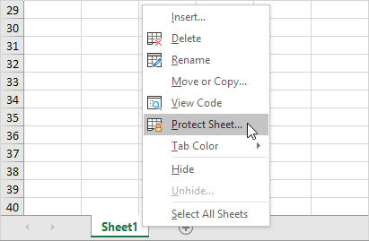
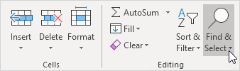
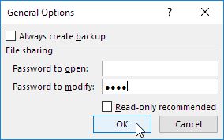
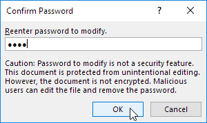

unduh file latihan
Lindungi Buku Kerja (Protect Workbook)
Contoh ini mengajarkan Anda cara melindungi struktur buku kerja di Excel.
Jika Anda memproteksi struktur buku kerja, pengguna tidak bisa lagi menyisipkan, menghapus, mengganti nama, memindahkan, menyalin, menyembunyikan atau memperlihatkan lembar kerja.
1. Buka buku kerja.
2. Pada tab Tinjau, dalam grup Proteksi, klik Lindungi Buku Kerja.

3. Periksa Struktur, masukkan kata sandi dan klik OK.
Catatan: Opsi Windows tidak tersedia di Excel 2013 dan versi yang lebih baru.
4. Masukkan kembali kata sandi dan klik OK.
Pengguna tidak dapat lagi menyisipkan, menghapus, mengganti nama, memindahkan, menyalin, menyembunyikan, atau memperlihatkan lembar kerja.
Catatan: untuk membuka proteksi buku kerja, klik Proteksi Buku Kerja dan masukkan kata sandi. Kata sandi untuk file Excel yang dapat diunduh adalah "mudah".
unduh file latihan
Lindungi Lembar (Protect Sheet)
Saat Anda berbagi file Excel dengan pengguna lain, Anda mungkin ingin memproteksi lembar kerja untuk membantu mencegahnya diubah.
1. Klik kanan tab lembar kerja.
2. Klik Lindungi Lembar.

3. Masukkan kata sandi.
4. Periksa tindakan yang Anda izinkan untuk dilakukan oleh pengguna lembar kerja Anda.
5. Klik Oke.
Catatan: jika Anda tidak memeriksa tindakan apa pun, pengguna hanya dapat melihat file Excel!
6. Konfirmasikan kata sandi dan klik OK.
Lembar kerja Anda dilindungi sekarang. Untuk membuka proteksi lembar kerja, klik kanan pada tab lembar kerja dan klik Buka Proteksi Lembar. Kata sandi untuk file Excel yang dapat diunduh adalah "mudah".
unduh file latihan
Kunci Sel (Lock Cells)
Kunci Semua Sel |
Kunci Sel Tertentu |
Kunci Sel Formula
Anda dapat mengunci sel di Excel jika Anda ingin melindungi sel agar tidak diedit.
Kunci Semua Sel
Secara default, semua sel dikunci. Namun, mengunci sel tidak berpengaruh hingga Anda memproteksi lembar kerja.
1. Pilih semua sel.
2. Klik kanan, lalu klik Format Sel (atau tekan Ctrl+1).
3. Pada tab Perlindungan, Anda dapat memverifikasi bahwa semua sel dikunci secara default.
4. Klik OK atau Batal.
5. Lindungi lembaran.
Semua sel terkunci sekarang. Untuk membuka proteksi lembar kerja, klik kanan pada tab lembar kerja dan klik Buka Proteksi Lembar. Kata sandi untuk file Excel yang dapat diunduh adalah "mudah".
Kunci Sel Tertentu
Untuk mengunci sel tertentu di Excel, pertama-tama buka kunci semua sel. Selanjutnya, kunci sel tertentu. Terakhir, lindungi lembaran.
1. Pilih semua sel.
2. Klik kanan, lalu klik Format Sel (atau tekan Ctrl+1).
3. Pada tab Perlindungan, hapus centang pada kotak Terkunci dan klik OK.
4. Misalnya, pilih sel A1 dan sel A2.
5. Klik kanan, lalu klik Format Cells (atau tekan Ctrl+1).
6. Pada tab Proteksi, centang kotak Terkunci dan klik OK.
Sekali lagi, mengunci sel tidak berpengaruh sampai Anda melindungi lembar kerja.
7. Lindungi lembaran.
Sel A1 dan sel A2 terkunci sekarang. Untuk mengedit sel-sel ini, Anda harus membuka proteksi lembar. Kata sandi untuk file Excel yang dapat diunduh adalah "mudah". Anda masih dapat mengedit semua sel lainnya.
Kunci Sel Formula
Untuk mengunci semua sel yang berisi rumus, pertama-tama buka kunci semua sel. Selanjutnya, kunci semua sel rumus. Terakhir, lindungi lembaran.
1. Pilih semua sel.
2. Klik kanan, lalu klik Format Sel (atau tekan Ctrl+1).
3. Pada tab Perlindungan, hapus centang pada kotak Terkunci dan klik OK.
4. Pada tab Beranda, dalam grup Pengeditan, klik Temukan & Pilih.

5. Klik Ke Spesial.

6. Pilih Rumus dan klik OK.

Excel memilih semua sel rumus.
7. Tekan Ctrl+1.
8. Pada tab Proteksi, centang kotak Terkunci dan klik OK.
Catatan: jika Anda juga mencentang kotak Tersembunyi, pengguna tidak dapat melihat rumus di bilah rumus saat mereka memilih sel A2, B2, C2, atau D2.
Sekali lagi, mengunci sel tidak berpengaruh sampai Anda melindungi lembar kerja.
9. Lindungi lembaran.
Semua sel formula terkunci sekarang. Untuk mengedit sel-sel ini, Anda harus membuka proteksi lembar. Kata sandi untuk file Excel yang dapat diunduh adalah "mudah". Anda masih dapat mengedit semua sel lainnya.
unduh file latihan
Buku Kerja hanya-baca (Read-only Workbook)
Contoh ini menunjukkan cara membuat buku kerja Anda hanya-baca. Pengguna masih bisa menyimpan perubahan dengan membuat salinan baru dari buku kerja. Untuk perlindungan yang lebih baik, lindungi
lembaran.
1. Buka buku kerja.
2. Pada tab File, klik Simpan Sebagai.
3. Klik Telusuri.

4. Klik tombol Alat dan klik Opsi Umum.
5. Di kotak Kata sandi untuk mengubah, masukkan kata sandi dan klik OK.

Catatan: Jika Anda hanya ingin merekomendasikan pengguna untuk membuka file Excel sebagai hanya-baca, tanpa melindunginya, jangan masukkan kata sandi dan centang Disarankan baca-saja.
6. Masukkan kembali kata sandi dan klik OK.

Catatan: fitur ini tidak mengenkripsi file Excel Anda. Pengguna jahat dapat mengedit file dan menghapus kata sandi.
7. Masukkan nama file dan klik Simpan.
Buku kerja Anda sekarang hanya-baca. Kata sandi untuk file Excel yang dapat diunduh adalah "mudah".
unduh file latihan
Tandai sebagai Final (Mark as Final)
Tandai buku kerja sebagai final di Excel untuk menunjukkan bahwa ini adalah versi final dari buku kerja Anda. Hanya gunakan fitur ini untuk mencegah pengeditan. Pengguna masih dapat mengedit buku kerja.
1. Buka buku kerja.
2. Pada tab File, klik Info.
3. Klik Protect Workbook, Tandai sebagai Final.
4. Klik Oke.
Hasil.
Catatan: pengguna masih dapat mengedit buku kerja dengan mengklik Tetap Edit. Perhatikan juga ikon Ditandai sebagai Final di bilah status.